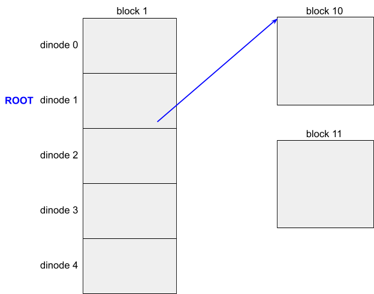
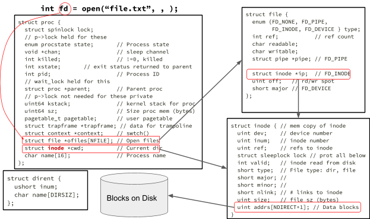

In this lab you will add large files and symbolic links to the xv6 file system.
Before writing code, you should read "Chapter 8: File system" from the xv6 book and study the corresponding code.
In this lab, there are several questions for you to answer. Questions are in boxes with a light orange background. Write each question and its answer in your notebook. Take photo(s) of your questions/answers and submit the photo(s) on Canvas.
The Linux grep command can be helpful on some questions. For example, suppose a question asks you about the struct proc. You can discover the definition and uses of the struct proc by issuing the following Linux grep command in the kernel directory.
$ grep inode *.h defs.h:struct inode; defs.h:int dirlink(struct inode*, char*, uint); defs.h:struct inode* dirlookup(struct inode*, char*, uint*); ... lots of matches fs.h:#define IBLOCK(i, sb) ((i) / IPB + sb.inodestart) proc.h: struct inode *cwd; // Current directory % grep inode *.c exec.c:static int loadseg(pde_t *, uint64, struct inode *, uint, uint); exec.c: struct inode *ip; exec.c:loadseg(pagetable_t pagetable, uint64 va, struct inode *ip, uint offset, uint sz) ... lots of matches sysfile.c: struct inode *ip; sysfile.c: struct inode *ip;
In the directory of your xv6-labs, create two files: answers-fs.txt and time.txt that the grading script looks for. You can create these files by the following:
$ echo > answers-fs.txt $ echo 10 > time.txtI use the information in your photo files and your lab-fs-handin.txt file that you submit on Canvas. I have retained these files and this grading script approach in case I want to use it in the future.
Fetch the xv6 source for the lab and check out the util branch:
$ git fetch $ git checkout fs $ make clean
1. We know there are disk inodes and in-memory inodes. This question is more general. Describe an inode in your own words.
2. Why do we have disk inodes and in-memory inodes?
3. Inodes (both disk and in-memory) do not contain filenames. Where are filenames and how are they related to inodes?
4. We know the RAM is a sequence of bytes, where each byte has a physical address. Compare RAM and disks.
5. Suppose that our file system has disk blocks that are 1024 bytes and a disk inode is 64 bytes. Our file system has allocated blocks 7, 8, and 9 to store disk inodes.
6. Suppose that our file system has disk blocks that are 1024 bytes and the following is the format of our disk inode, which does not have any indirect blocks is the following.
struct dinode {
short type; // File type
short major; // Major device number (T_DEVICE only)
short minor; // Minor device number (T_DEVICE only)
short nlink; // Number of links to inode in file system
uint size; // Size of file (bytes)
uint addrs[8]; // Data block addresses
};
What is the maximum number of bytes a file can be?
7. Suppose that our file system has disk blocks that are 1024 bytes and the following is the format of our disk inode, where addrs[8] is an indirect block.
struct dinode {
short type; // File type
short major; // Major device number (T_DEVICE only)
short minor; // Minor device number (T_DEVICE only)
short nlink; // Number of links to inode in file system
uint size; // Size of file (bytes)
uint addrs[9]; // Data block addresses
};
What is the maximum number of bytes a file can be?
8. How does a filesystem support multiple filenames referencing the same data?
9. How does the open system call reference a file?
10. How does the read system call reference a file?
11. How does a directory entry reference file?
12. What are three ways to reference a file?
13. Consider the following C code snippet.
int main(int argc, char **argv) {
int fd = open("file", O_RDONLY);
...
}
What is the value of fd and why?
14. Consider the following ls command, which I entered on our CPSC server. The command displays information about a file that is stored in the file's inode.
$ ls -l file.c -rw-r--r-- 1 gusty faculty 3609 Apr 22 2024 file.c
15. Consider the following echo and pwd commands, which I entered on our CPSC server. The commands and output have line numbers so I can reference them for questions. The echo command shows I am using the bash (or Bourne Again) Shell. Ken Thompson ahd Dennis Ritchie (both at Bell Labs) were the original developers of Unix. Unix Version 6 (released in 1975) was the first version widely distributed, and it is the basis of our Xv6 OS. Ken Thompson wrote the first shell, which was in the file sh.c. Our Xv6 user/sh.c is similar to the original Thompson shell. Stephen Bourne (of Bell labs) wrote the Bourne shell, which was included in the 1979 release Unix Version 7 in the file sh.c. Brian Fox of the GNU project wrote the Bourne Again shell as a completely open version of the Bourne shell. The bash shell was released in 1989. bash is the default shell for most Linux and Unix distriubtions.
1 $ echo $SHELL 2 /bin/bash 3 $ pwd 4 /home/faculty/gusty/xv6-labs/kernel 5 $ cd .. 6 $ pwd 7 /home/faculty/gusty/xv6-labs
16. When a process starts, what are file descriptors 0, 1, and 2?
17. Consider the following ls command, which I entered on our Xv6 system.
$ ls README README 2 2 2305If you examine the code in ls.c, you will discover the following line of code displays the ls results.
printf("%s %d %d %l\n", fmtname(path), st.type, st.ino, st.size);
If you examine the code in printf.c, you will discover the following line of code is used to display each character.
write(1, &c, 1);Explain how the following ls shell command places the
$ ls README > file $ cat file README 2 2 2305
18. What is a file?
19. What is a pipe?
20. Both open and pipe system call return file descriptors. Compare files and pipes.
21. Xv6 does not have a rename system call. Describe what you would have to do to implement rename. I am not looking for the details of how to add a system call to Xv6. I just want you to describe what has to happen for a file to be renamed.
22. Suppose that our file system has disk blocks that are 1024 bytes and the filesystem has 32,768 total blocks. We allocate block 1 to the super block, block 2 to the log head, blocks 3 to 31 to log blocks, and blocks 32 to 44 to inodes. How many blocks must we allocate to the bitmap in order to use the remaining blocks as data blocks.
23. Consider the following diagram of a tiny filesystem. The dinodes are on block 1. The ROOT directory is allocated to dinode 1. Data blocks begin at block 10. Redraw the diagram in your notebook, and complete it for the file /file, which has your name as its content. Assume that block 11 is allcated as the data block for file.

24. Consider the following diagram of a struct proc and its corresponding file data structures.

Explain the diagram in your own words.
In this assignment you'll increase the maximum size of an xv6 file. Currently xv6 files are limited to 268 blocks, or 268*BSIZE bytes (BSIZE is 1024 in xv6). This limit comes from the fact that an xv6 inode contains 12 "direct" block numbers and one "singly-indirect" block number, which refers to a block that holds up to 256 more block numbers, for a total of 12+256=268 blocks.
The bigfile command creates the longest file it can, and reports that size:
$ bigfile .. wrote 268 blocks bigfile: file is too small $The test fails because bigfile expects to be able to create a file with 65803 blocks, but unmodified xv6 limits files to 268 blocks.
You'll change the xv6 file system code to support a "doubly-indirect" block in each inode, containing 256 addresses of singly-indirect blocks, each of which can contain up to 256 addresses of data blocks. The result will be that a file will be able to consist of up to 65803 blocks, or 256*256+256+11 blocks (11 instead of 12, because we will sacrifice one of the direct block numbers for the double-indirect block).
nmeta 70 (boot, super, log blocks 30 inode blocks 13, bitmap blocks 25) blocks 199930 total 200000This line describes the file system that mkfs/mkfs built: it has 70 meta-data blocks (blocks used to describe the file system) and 199,930 data blocks, totaling 200,000 blocks.
If you understand
this diagram, you are well on the way to solving this problem.
The code that finds a file's data on disk is in bmap() in fs.c. Have a look at it and make sure you understand what it's doing. bmap() is called both when reading and writing a file. When writing, bmap() allocates new blocks as needed to hold file content, as well as allocating an indirect block if needed to hold block addresses.
bmap() deals with two kinds of block numbers. The bn argument is a "logical block number" -- a block number within the file, relative to the start of the file. The block numbers in ip->addrs[], and the argument to bread(), are disk block numbers. You can view bmap() as mapping a file's logical block numbers into disk block numbers.
$ bigfile .................................................................................................................................................................................................................................................................................................................................................................................................................................................................................................................................................................................................................................................................................. wrote 65803 blocks done; ok $ usertests -q ... ALL TESTS PASSED $
bigfile will take at least a minute and a half to run.
Hints:
In this exercise you will add symbolic links to xv6. Symbolic links (or soft links) refer to a linked file by pathname; when a symbolic link is opened, the kernel follows the link to the referred file. Symbolic links resembles hard links, but hard links are restricted to pointing to file on the same disk, while symbolic links can cross disk devices. Although xv6 doesn't support multiple devices, implementing this system call is a good exercise to understand how pathname lookup works.
Originally, you were to implement the symlink(char *target, char *path) system call, which creates a new symbolic link at path that refers to file named by target. Implementing this is rather difficult. Thus, I have modified this portion of the lab.
For further information about links (both symbolic/soft and hard links), you can search the Internet or refer to the man pages for link and symlink. When performing your background study be sure to study the differences between soft and hard links.
In the file user/symlinktest.c, explain the functions testsymlink() and stat_slink().
In your design, you can create/use functions such as the following:
For example, $ echo gusty > file can be designed as follows. You can create other functions.
$ symlinktest Start: test symlinks test symlinks: ok Start: test concurrent symlinks test concurrent symlinks: ok $ usertests -q ... ALL TESTS PASSED $
Hints:
This completes the lab. Make sure you pass all of the make
grade tests.
Read Lab Submissions for instructions on how
to submit your lab.
Submit the lab